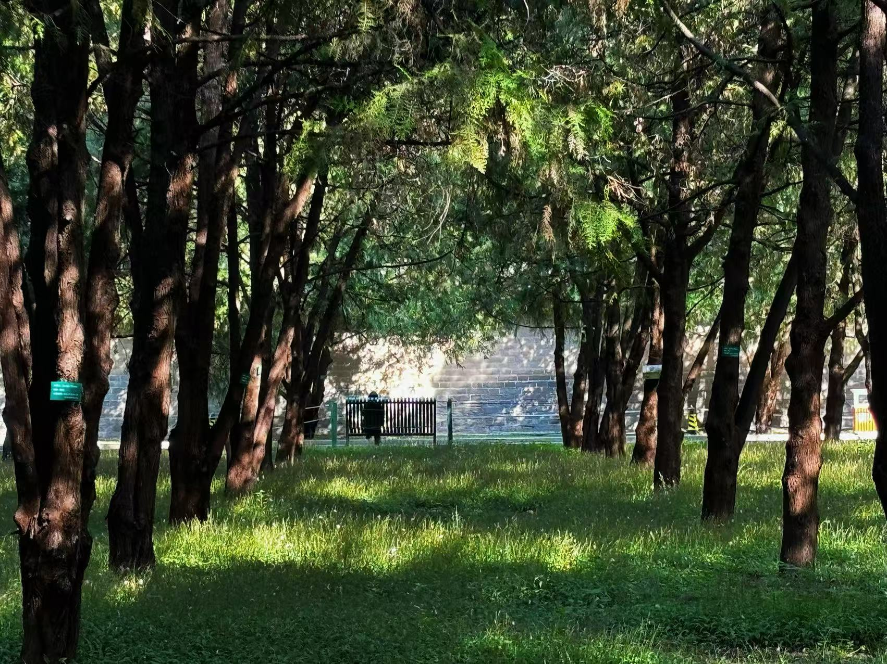
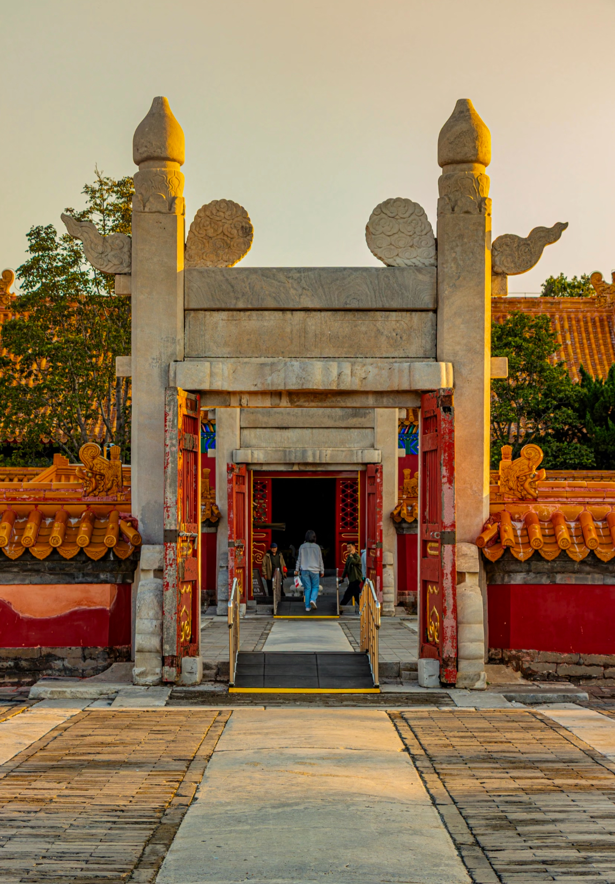
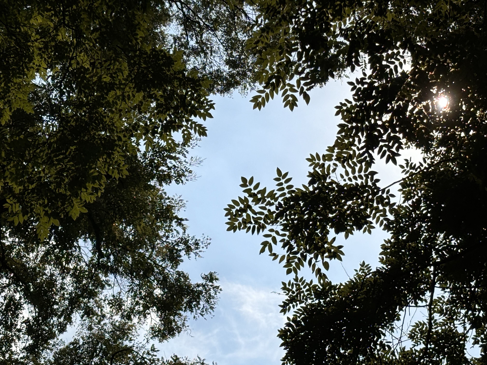

ROUTE 03
与地坛同呼吸
在寂静中，听见生命的回响
序章：并非朝圣
从地坛西门进入，脚步会不自觉地放慢。这门，是史铁生当年摇着轮椅无数次经过的入口。
这里不是景点，它是因一个人的文字，从一个物理空间，升华为一代人的精神地标。

✉️ 漫步任务 · 冥想
"点击按钮，与自我对话"
🎮 互动游戏 · 史铁生语录匹配
语录
主题
古柏区·时间直立着生长
坛周郁郁葱葱的古柏林，是地坛的另一种语言。这些柏树，许多已活了三四百年。在史铁生眼里，草木的自在，反衬出人的受困。

方泽坛·天地对话
方泽坛是地坛的核心建筑，是明清两代帝王祭祀皇地祇的场所。这座圆形祭坛象征着天圆地方的宇宙观。
坛上的青石板、汉白玉栏杆、精美的雕刻，都诉说着古代帝王对天地的敬畏与对话。

地坛的历史回响
作为明清两代帝王祭祀地祇的场所，地坛承载着深厚的历史文化底蕴。它不仅是古代祭祀文化的重要载体，更是人与自然和谐共生的典范。
方泽坛的圆形祭坛、精美的汉白玉栏杆、庄重的宫门，每一处细节都体现着中国古代建筑的精湛技艺和深邃哲学思想。

史铁生的精神领地
对史铁生而言，地坛是他的精神家园。在这里，他度过了人生中最艰难的时光，也找到了生命的意义和写作的灵感。
《我与地坛》中的每一个文字，都浸润着地坛的泥土和气息。这座古老的地坛，因为一个作家的文字，获得了永恒的生命。
